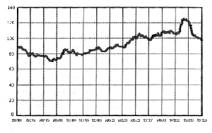

The futures markets operate similarly to the New York Stock Exchange. In most cases, there is a trading floor, usually called a pit, where traders buy and sell among themselves. Futures markets differ from stock markets in some important ways.
First, what is traded is not stocks - shares in a company - but futures contracts. These are contracts to deliver a fixed amount of a commodity (or foreign currency, bonds, or a cash multiple of some financial index) at a particular time. For example, a September 1997 wheat contract on the Chicago Board of Trade is a promise to deliver 5000 bushels of wheat to a Chicago warehouse in September 1997. The price is fixed when the contract is traded.
Futures contracts are derivative securities; their price depends on the price of something else called the underlying. For example, a wheat contract price depends on the price of wheat, and a Deutschemark contract depends on the dollar-to-Deutschemark exchange rate. Everything else about a futures contract is standardized: the amount of the underlying to be delivered, the place of delivery, and the month in which delivery is to take place.
At any given time, a number of different delivery months for the same commodity will be available. The contract with the most immediate delivery is called the front month. For a number of reasons, speculators trade mostly in the front month contract and switch to the next available contract some time before the delivery deadline. This switching process is known as rollover, and accounting for it is an important part of futures trading system analysis.
The second difference between futures and stocks is the symmetry of expectations. When you buy a stock, you expect it to rise in price, often called going long or being bullish. Going short, or being bearish, is a complicated process involving borrowing shares of the stock from another investor, paying any dividends accrued to that investor and then buying the stock back later at a (hopefully) lower price. But with futures, trading is symmetric - it is as easy to go short as it is to go long and there are no dividends to worry about. Owning shares of stock often gives the owner a proportional vote in some of the company's business decisions, but holding a futures contract only gives one the obligation to accept or make delivery at the specified date, place and price.
Third, when you buy stock on margin, you must put up at least half of the stock price in cash, and the rest of the money is borrowed. You pay interest on this loan. Margin on futures contracts is different. You must deposit a certain percentage of the contract value as a good faith deposit, but in many cases you actually earn interest on this money. The minimum required margin varies with the market and the type of account. Determining how much margin to use over the required minimum is an important part of the trading strategy, but I won't talk about that here.
Who are the participants in the futures markets? First of all, there are the hedgers. These are the farmers, mining companies, bakeries, textile mills, banks, manufacturers and so on that produce or consume commodities, operate in nations with different currencies or hold large portfolios of stocks and bonds. What separates hedgers from the other participants is that futures markets are not their primary business. Hedgers use futures contracts to lower their business risk due to changes in prices of commodities, interest rates, foreign exchange rates or portfolio values. For example, suppose a farmer knows he will harvest 5000 bushels of wheat in September. He has no way of knowing what the price of wheat will be in September; if it is too low he will not recover his investment in time, fertilizer, seed, and labor. Suppose, though, that it is now March and a contract for 5000 bushels of September wheat is trading at $5. The farmer can hedge by going short one of these contracts. He has promised to deliver his wheat in September for $5 a bushel and someone unknown has promised to accept it at that price. Now suppose there is a surplus of wheat come September; wheat is selling for $4 a bushel. Our farmer has locked in a price of $5!
Similarly, a flour mill might know it will need 5000 bushels of wheat in September. Like the farmer, the flour mill has no way of knowing what the price of wheat will be in September. The flour mill can hedge by going long one September wheat contract, locking in the $5 per bushel cost. If there is a shortage of wheat come September and wheat is $6 a bushel, the flour mill accepts delivery and gets the wheat for $5 a bushel!
The other major class of futures markets participants is speculators, or traders. Rather than use the futures markets to lower risk, they actually bear the risk the hedgers wish to avoid. In the above example, suppose a speculator believed in March that the weather during the growing season was going to be hot and dry, thus causing a shortage of wheat. He would go long - buy a contract at $5. Now suppose the weather is indeed hot and dry. Come mid-August, the September wheat contract is trading at $6 a bushel. The speculator doesn't want the 5000 bushels of wheat, so he will sell the contract and pocket the $5000 profit! If he still believes wheat is going to increase in price, he will roll over his position. After selling the September contract, he will buy a December contract. Rollover is an important fact of futures trading and I'll describe it in more detail later.
Conversely, if our speculator expected a bumper crop of wheat and lower prices come September, he would go short in March and plan to buy back the contract at a lower price in mid-August. In short, unlike the hedgers - the farmer and the flour mill - the speculator has no inherent preference for long or short positions. He simply picks whichever he believes will be profitable.
It should be noted at this point that the floor traders who buy and sell the contracts in the pit are speculators: they go long expecting to sell a contract to another floor trader at a higher price and they go short expecting to buy a contract back from another floor trader at a lower price. Like other speculators and unlike hedgers, futures trading is their primary business.
The really important participants in the futures markets are the hedgers and speculators. The rest of the participants in the futures markets are auxiliary: brokers, clearing houses, newsletter writers, trading seminar teachers, government regulators and so on. For more information on the futures markets, the best reference is Teweles; beginners might want to browse the Mid-America Commodity Exchange at http://www.midam.com/.
There are three main requirements for successful trading (cf. both Schwager references).
Within these constraints, there are a wide variety of possible approaches to trading, ranging from sophisticated econometric analyses of hundreds of variables to simply looking at chart patterns and using your intuition to guess the future direction of prices. For the remainder of this article, I'm going to focus exclusively on mechanical trading systems based on past prices, known as technical trading systems.
| Weekly Japanese Yen Exchange Rate |
|  |
Mechanical trading systems are sets of rules for when to go long, when to go short and when to remain neutral. As I noted above, there is a great wealth of information available on supply and demand of commodities, economic data affecting interest rates, stock prices, and foreign exchange rates. There are even records of the futures positions of large-volume hedgers and speculators. Systems based on such information are generally called fundamental systems. See chapter 6 of Teweles for a good overview.
There is also the information generated by the hedgers and speculators themselves - the prices of the futures contracts from trade to trade, minute to minute, day to day and so on. Systems based on these price movements alone are called technical systems. (Chapter 7 in Teweles.)
Technical systems can be further subdivided into a number of classes. I won't go into much detail; the best textbook on the subject is LeBeau and Lucas. The most popular class of systems uses daily data samples and is known as trend following. Most of these systems are simple enough that they can be operated in a few minutes a day with pencil and paper, although computers make things much easier.
How do trend-following systems work? Take a look at the figure on the previous page, a weekly chart of Japanese Yen exchange rates from January 1989 to December 1995. There are periods of strong up or down trends, such as 921231 to 930702 and 950630 to 951231.(Please note that throughout this article, I use the date convention most common among traders. A date is a six-digit number of the form yymmdd. For example, January 5, 1996 is 960105. Clearly there is a Year 2000 issue with this convention, so be warned! ) And there are periods of more or less sideways movement, called a trading range, such as 940701 to 941230. It's easy to see that if you went long on 921231 and closed out the position on 930702, you would have made money. In fact, you would have made about $15,000 per contract.
The problem, of course, is that you cannot trade the past! On 921231, the long uptrend had not yet happened. So the way a trend-following system works is this: it waits for a certain length of time, say 20 days, into what looks like an up or down trend, then takes a position in the direction of the trend. If the trend continues, you hold the position until it reverses, at which time you close out the position, usually with a profit. If the trend does not continue, you will lose money. A good trend-following system will minimize the size of these losses, known as whipsaws.
Over a long period of time, the winning trades from trend-following should add up to more money than the losing trades. A system is said to have a winning edge if the average trade is a winning trade, regardless of the other statistical properties of the distribution of trade profits and losses. The other properties are important for money and portfolio management; see Vince's book for details.
In 1990, Lukac, Brorsen and Irwin analyzed twelve technical trading systems in common use by traders. Of the twelve, only four turned out to be profitable. Of these four, the best on a risk-adjusted basis was a rule credited to Richard Donchian called the N-day channel rule.
The original Donchian rule was as follows: go long if the price rises above the highest price of the last four weeks, and go short if the price falls below the low of the last four weeks. This has evolved into what is called a stop and reverse system: once you are holding long, you close the long and open a short position on a stop order whenever the price falls below the four week low. You hold this short position until the price rises above the four-week high; then you close the short and open a new long. This system is always in the market, either long or short. If the market enters a sideways period, hold the current long or short position as long as the stop isn't triggered.
The constant four weeks in the original Donchian rule has evolved into a variable: the number of days in the channel, called N. The high of the past N days is called the buy stop and the low of the past N days is called the sell stop. The actual rule tested in my script is:
Rollover days are handled specially. If there is a signal - a change from long to short or short to long - the old position will be closed in the old front contract and the new one opened in the new front contract. If there is no signal, the position in the old front contract will be closed and a position in the same direction will be opened in the new front contract. This trade is assumed to take place at the rollover day's closing price.
There are several possible uses for Perl in futures trading. You could use it to acquire free contract price data from http://www.cbot.com and structure it as a database. Or you could implement a trading system. I've done both of these, but what I'm using Perl for in this case is evaluating the Donchian system.
Now that we've chosen a trading system, how do we test it? The standard procedure is to select some futures contracts, procure some data for the past prices of these contracts and simulate the trading system on the data for various values of the system parameters. For this test, I selected the period from 890101 to 951231 and N for 20, 40, 60 and 80 days. The contracts I selected for testing were the following ten:
Contract Code Corn c_ Deutschemark dm Eurodollars ed Five-year Treasury Notes fb COMEX gold gc Japanese Yen jy Soybeans s_ COMEX silver si Ten-year Treasury Notes ty 30-year Treasury Bonds us
On the right is Perl code that simulates the Donchian system for one value of N and one contract data file. The code is fairly straightforward once you know what the inputs and outputs are.
The input data files come from the Pinnacle Data Corporation, and the format is known as continuous linked contract. Each record has eight fields. The first field is this date in the above-described format. The second field is the opening price of the day, the third field the day's high, the fourth field the day's low and the fifth field the closing price of the day. The last three fields give volume and open interest data; they aren't used in this system.
The actual file is composed of sequential records for each day of trading. Rollover days are preceded by a special record: the open price is actually the closing price of the next day's old front contract and the close price is the closing price of the next day's new front contract. The rest of the fields in this flag record are zero. The records before this rollover flag are data for the old front contract and the records after the flag record are data for the new front contract.
Most trading system testers work with adjusted files, which are produced by software supplied with the data files. The adjustment program reads the raw data file as described above and adds offsets to the data so there are no gaps on rollover days. The graph shown earlier was produced this way. This is usually acceptable when comparing trading systems, since all trading systems are using the same data. But for my purpose - evaluating a specific trading system - using adjusted contracts is misleading, because in the real world the rollover trades must be made whether they are winners or losers.
So the basic flow of the script is as follows: each record of the file is read and the trading system's actions on that day are simulated. When a rollover flag record is encountered, the script computes the offset and sets a flag, warning that the next day is a rollover day. On the rollover day, the buffers of past data (high and low prices that define the channel) are adjusted by the offset. This converts the saved prices from the old front contract to the new front contract. As noted above, if no signal occurs on a rollover day, a rollover trade is made at the close. Otherwise, rollover day processing is the same as a regular day.
The output of the script is a trade log. Each line of the log represents a closed trade. The first field is the contract code, the second field is the channel length in days, and the third field is "1" for a long position or "-1" for a short position. The fourth and fifth fields are the opening date and price. Field six is the closing date, and field seven is the price at which it closed. The eighth and final field is the number of days the position was held; it's easier to have the script count them than to do the calendar arithmetic.
How much money do we need to invest
Now that we have trade logs, we need to perform some statistical analysis. The fundamental question we need to answer is "Does the system have a positive expectation?" That is, is the average trade over all contracts and all channel lengths a winner or a loser? Other interesting things we might ask are whether some channel lengths are better than others over all contracts and for individual contracts. The script that does this analysis is called stats.pl, which you can find on the TPJ web site (http://tpj.com).
stats.pl simply reads through all the trade logs and computes the profit or loss for each trade, accumulating counts, sums and sums of squares for these figures. The statistics are accumulated over all trades, over all contracts for each channel length, over all channel lengths for each contract and for each channel length/contract combination. As you'll see from the code, hashes make this easy!
Once the trade logs are all read in, the statistics are computed and printed. We're mostly interested in the average trade, but the standard deviation and standard error of the mean are also meaningful.
The only tricky part to this script is calculating the profit or loss for each trade. We know the price difference and whether the trade was long or short. This is translated to dollars by multiplying by a dollar factor from a table in the script. For example, for corn, the dollar factor is 50. So a long trade opened at 264.75 and closed at 273.25 would make a profit of $425 and a short trade at the same prices would lose $425.
There are two more factors we need to take into account. First, we can't trade for free - we must pay a commission for each trade. Second, there is slippage - a trade does not always take place at exactly the price we simulated. The standard practice in trading system simulation is to deduct a constant amount from each trade for combined commissions and slippage; I used $100.
On the TPJ web site, you'll also find stats.out, the output of stats.pl. As we had hoped, our trading system is profitable, with an average profit of $134.03 per trade over the 2221 trades made in the seven year test period. The total profit was $297,691.
Looking at the results for the various channel lengths over all contracts, all four tested lengths were profitable, with 80 days being the best. For the individual contracts across all channel lengths, five were profitable and five - corn, Deutschemarks, gold, soybeans and silver - were not. This doesn't mean that these contracts won't be profitable in the future - only that for the test period, the money lost in the trading ranges exceeded the profits from the trends. There is one more computation we need to make. We know how much profit we made - $297,691, but how much money would we have needed to invest initially? This is a very complicated question, but a simple way to approach it is to pick a conservative margin percentage, say 10%. In other words, we deposit 10% of the total contract value as margin. The table at the bottom of shows this computation.
The initial price is the price on the first day of trading for the test period, 890103. Since we are trading all four channel lengths, the required capital is four times the required capital for a single contract. The grand total is $320,696. Given the total profit of $297,691, the total return over the seven year test period is 92.8%, which works out to 9.9% per year.
So, in terms of the initial goal of building a large fortune from a few thousand dollars, this system does not appear to be suitable. However, it is profitable. Moreover, as I noted earlier, in many cases you would earn interest on your margin investment; typically this would add another 3% or 4% to the annual return. When you consider the trivial amount of effort required to trade this system, this is a fairly encouraging result. While it is clearly not suitable for beginners, it appears to be a valid basis for a professional trading enterprise.
LeBeau, Charles, Lucas, David W. (1992) Technical Traders Guide to Computer Analysis of the Futures Market, Irwin Professional Publishing, Burr Ridge, Illinois.
Lukac, Louis P., Brorsen, B. Wade, Irwin, Scott H. (1990), A Comparison of Twelve Technical Trading Systems, Traders Press, Inc., Greenville, SC.
Pinnacle Data Corporation (1992 - 1996), User's Manual, Pinnacle Data Corporation, Webster, NY. Schwager, Jack D. (1990), Market Wizards, Harper and Row Publishers, New York.
Schwager, Jack D. (1994), The New Market Wizards, Harper Collins Publishers, New York.
Teweles, Richard J., Jones, Frank J. (1987), The Futures Game, McGraw-Hill Book Company, New York.
Vince, Ralph (1992) The Mathematics of Money Management, John Wiley and Sons, New York.
_ _END_ _
{kind=link}